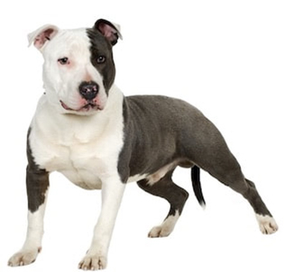
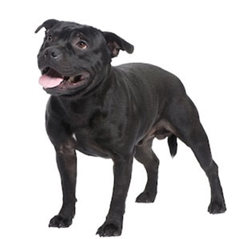
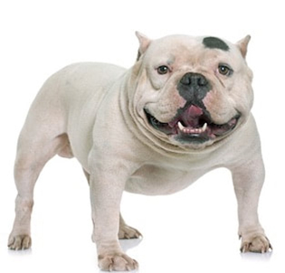
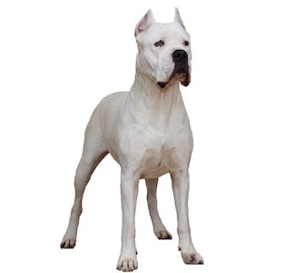
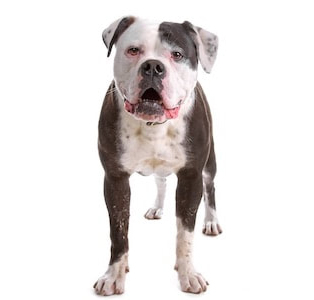
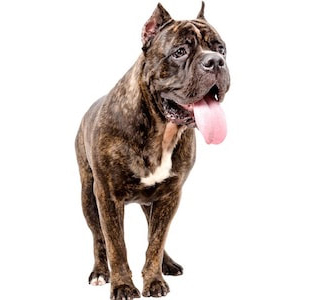

Pitbull-type Breeds
Pitbull-type dogs make outstanding canine citizens and are loving companions in millions of U.S. households. They consistently achieve excellent temperament scores, are successful as service dogs, therapy dogs, K9 police dogs, and as family pets . While the term "pit bull" is a generic term used to loosely describe a type (or category) of dog based only on its physical appearance (not on genetics or lineage) resembling any medium-sized dog with physical characteristics from any of the numerous "bully-type" (or bulldog-type) breeds, there are four breeds that are commonly classified as the modern "pitbull-type" breeds by AKC/UKC breed standards. The American Pit Bull Terrier (APBT) is the only formal breed with the term "pit bull" in its name and well over 20 other unique breeds and their mixes share similar physical characteristics that are common to dogs in the "pitbull-type" category. Pitbull-type dogs are growing in popularity and are by far the most popular "strong" breed dog in the U.S. in fact, an estimated 20% of dogs in the U.S. can be classified as pitbull-type dogs. Below, learn more about the pitbull-type breeds, the history of pitbull-type dogs, and how the term "pit bull" originated.An easy way to identify bias and misinformation about pitbull-type dogs is any website or organization that publishes aggressive pictures of pitbull-type dogs. Aggressive pictures can be found for any breed, but these biased and cherry-picked pictures never represent the breed as a whole.
AKC & UKC Pitbull-type Breeds
There are four breeds that are commonly classified as the modern "pitbull-type" breeds by AKC/UKC breed standards - most are members of the Terrier Group of dog breeds. The American Pit Bull Terrier (APBT) is the tallest and most athletic of the four pitbull-type breeds. The American Staffordshire Terrier is slightly shorter and stockier than the APBT. The Staffordshire Bull Terrier is easily the smallest of the four. The American Bully (not to be confused with the American Bulldog) is the most unique of the group as it's the most stout and closely resembles the classic Bulldog breed.
Weight: 30 to 60 lbs.
Height: 17 to 21 in.  American Staffordshire Terrier
Weight: 40 to 70 lbs.
Height: 17 to 19 in.  Staffordshire Bull Terrier
Weight: 24 to 38 lbs.
Height: 14 to 16 in.  American Bully
Weight: 30 to 55 lbs.
Height: 16 to 20 in.
|
American Pitbull Terrier Weight: 30 to 60 lbs. Height: 17 to 21 in. |
American Staffordshire Terrier Weight: 40 to 70 lbs. Height: 17 to 19 in. |
Staffordshire Bull Terrier Weight: 24 to 38 lbs. Height: 14 to 16 in. |
American Bully Weight: 30 to 55 lbs. Height: 16 to 20 in. |
History of Pitbull-type Dogs
Pitbull-type dogs are a crossbreed between a bulldog and a terrier originally bred in England in the early 19th century (then called "Bull and Terriers") to be working dogs on farms to herd, protect, and manage livestock. While their early history is complex and includes herding cattle and protecting homesteads, it also unfortunately includes the cruel sports of bull-baiting and dog fighting. However, these cruel "sports" were not specific to today's pitbull-type breeds - many different breeds were subjected to these activities which are now illegal almost everywhere. During the 20th century, pitbull-type dogs quickly became one of America's most popular family dogs to the extent that they became national mascots and were used on recruitment posters for World Wars 1 & 2 and were proudly called "America's dog". More recently, their popularity has continued to grow to an estimated 20% of the total dog population in the U.S. (all "pitbull-type" dogs and mixes combined) and are successful as service dogs, as therapy dogs, as K9 police dogs, as family pets, and consistently achieve excellent temperament scores.
Breeds Typically Misidentified as Pitbull-type Dogs
While there are over 20 different breeds (and many mixed breeds) with similar physical characteristics as pitbull-type dogs, the breeds below (and especially their many mixes) are just a few of the unique breeds frequently misidentified as pitbull-type dogs because of their appearance. These breeds are larger and less common than the pitbull-type breeds and are not classified as "pitbull-type" breeds by any canine organizations.
Weight: 100 to 130 lbs.
Height: 24 to 27 in.  Dogo Argentino
Weight: 88 to 100 lbs.
Height: 24 to 27 in.  American Bulldog
Weight: 60 to 100 lbs.
Height: 20 to 25 in.  Cane Corso
Weight: 80 to 120 lbs.
Height: 23 to 28 in.
|
Bullmastiff Weight: 100 to 130 lbs. Height: 24 to 27 in. |
Dogo Argentino Weight: 88 to 100 lbs. Height: 24 to 27 in. |
American Bulldog Weight: 60 to 100 lbs. Height: 20 to 25 in. |
Cane Corso Weight: 80 to 120 lbs. Height: 23 to 28 in. |
Breed Overview
Pit bulls are wonderful, loving animals that deserve the chance to have a good life.
Pit bulls have physical and mental characteristics that make them excellent partners for responsible, active and caring owners. These same outstanding qualities can, however, be challenging for people who don't have a lot of experience with dog ownership or have limited understanding of the breed. Luckily, pit bulls are intelligent, very responsive to training, and, above all, eager to please. Therefore, pit bulls should be enrolled in obedience classes as soon as they are up-to-date on their shots. Pitbulls are susceptible to parvovirus, so it is important that they receive all their vaccinations before coming into contact with other dogs or entering areas of high canine traffic. A well-behaved pit bull is the best way to fight breed prejudice and misconceptions.
Pit bulls can do well in an urban environment, provided they have enough exercise and other positive outlets for their energy. Many pit bulls are easygoing couch potatoes, but like all terriers, they can also be somewhat rambunctious until they mature. Maturity can come relatively late with this breed (two to three years old in some cases). Pit bulls remain playful throughout their lives and have a great sense of humor. True clowns at heart, these dogs will make you laugh like no other.
Pit bulls are energetic, agile, and strong. They are also very resourceful and driven. Determination is one of their most notable traits: They put their heart and soul into whatever they set out to do, whether it is escaping an inadequately fenced yard to explore the neighborhood, destroying your new couch if left home alone without a proper outlet to combat boredom, or climbing into your lap to shower you with kisses!
There is no one breed that is right for every household. Dogs should be adopted because they are a good fit for your lifestyle, not chosen solely based on appearance. Although people seeking a dog to compensate for their own insecurities or for use in illegal activities seem to be drawn to pit bulls these days, this should not be considered a reflection upon the dogs, as anyone with such motives shouldn't have a dog of any breed.